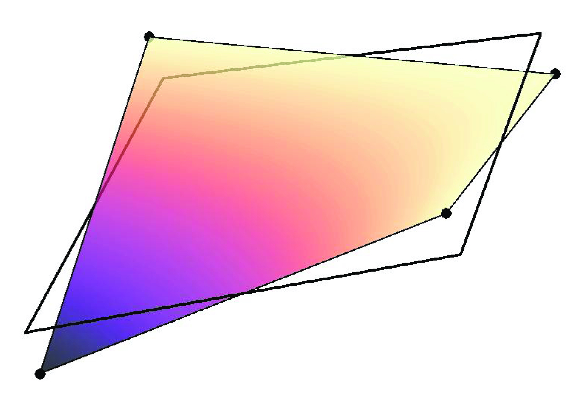
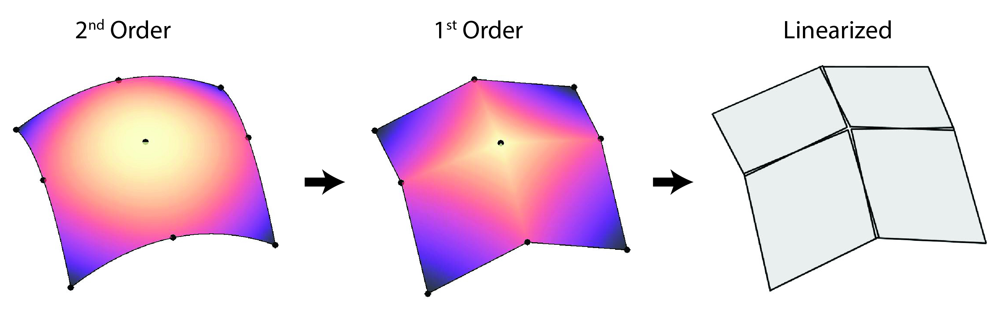

AutomaticMortarGeneration
The AutomaticMortarGeneration class is used to define mortar segment meshes to properly integrate discontinuities caused by normal projections of non-matching, faceted meshes. The mortar segment mesh is always replicated when the parent mesh is allowed to displace, otherwise its distribution type (replicated/distributed) is determined by the type of the parent mesh. The reason the mortar mesh is replicated during displacement is that we always build the mortar mesh by looping over all active elements associated with the secondary and primary interface, not just active local elements. When displacement is occurring we cannot know a priori what elements will project onto each other, so absent that knowledge we keep copies of all interface elements on each process. In the future we may eliminate this replication and implement communication patterns that occur during each residual and Jacobian evaluation to pull remote elements. This would improve memory scalability. Even for the current implementation where the interface of the parent mesh is replicated, one could legitimately ask why the mortar mesh needs to be so. The answer is that MortarNodalAuxKernel derived classes require access to all mortar segment elements, local or not, that have support from the shape function associated with a given node. In the future we may add ghosting functors to the mortar segment mesh, which would allow us to delete unnecessary non-local elements.
Nodal normal derivatives
AutomaticMortarGeneration constructs a unit normal at each secondary mortar node from the nodal-quadrature normals and weights of the incident secondary faces,
For supported mechanical-contact Jacobian evaluations, the face tangents are formed from AD nodal coordinates. The equivalent quadrature-weighted oriented area vector is formed from an edge rotation in 2D or a tangent cross product in 3D. AD then differentiates the area weighting, summation over the secondary face star, and final normalization. The stored nodal-normal value is retained, so residual and Jacobian evaluations use the same contact direction.
The incident-face set and orientation signs are fixed during an evaluation. Mortar segment topology, projections, integration measures, moving overlap boundaries, and active-set changes are not differentiated.
2D
Generation of the 2D mortar segment mesh is outlined in Peterson (2018) and follows the nodal-normal projection construction of Yang et al. (2005). Yang et al. define a continuous secondary normal field by cross-weighting the normals of the adjacent edges. Specifically, their unnormalized normal at node is : the normal of each edge is weighted by the length of the other edge. They use this field both to project secondary nodes onto the primary interface and to project primary nodes onto the secondary interface. The secondary interface elements are split at the projected primary nodes to form the mortar segment mesh elements.
MOOSE deviates from the nodal-normal weighting in Yang et al. (2005): rather than explicitly cross-weighting adjacent normals, MOOSE weights each normal by the nodal JxW contribution from that same edge, obtained with a QNodal quadrature rule. For straight first-order edges this JxW is proportional to the length of the same edge, so the two definitions differ when adjacent edge lengths differ. For curved or higher-order edges the MOOSE weight is additionally a local nodal quadrature/Jacobian contribution rather than a complete-edge length.
3D
Generation of mortar segment meshes in 3D is more challenging and various approaches exist. In MOOSE we follow the approach suggested in Puso (2004), defining mortar segments on local linearizations of the secondary interface. When the secondary interface is composed entirely of TRI3 faces (which are already linear), generating the mortar segment mesh reduces to projecting the primary face elements onto secondary face elements (along the secondary face normal) and performing a polygon clipping (and subsequent triangularization). The mortar segment mesh is therefore simply a sub-mesh of the secondary mesh in this case.
The definition is more delicate for quadrilateral faces and second order geometries:
QUAD4 faces
While first-order, QUAD4 faces are (in general) not linear. The 'twisting' or 'potato-chipping' of QUAD4 elements complicates the simple projection and polygon clipping defined for TRI3 faces. To circumvent this problem, mortar segment meshes are defined on local linearizations of QUAD4 elements (see below). The linearization of QUAD4 face elements allows the same polygon clipping algorithm used for TRI3 face elements, but the mortar segment mesh elements produced do not coincide with the secondary mesh and the mortar segment mesh is disconnected between secondary elements.

Second Order Geometries (TRI6 and QUAD9 faces)
Elements defined on second order geometries are curvilinear so to simplify the 'clipping' procedure both secondary and primary face elements are subdivided into first-order face elements then subsequently linearized (illustrated below). The same clipping and triangularization routine is then applied on the linearized sub-elements to create the mortar segments. See Puso et al. (2008).

Quadrature points defined on mortar segments (which live on linearized elements) are mapped back to second order elements following an analogous but reverse procedure to the one illustrated above; points are mapped from linearized elements to first order sub-elements then subsequently transformed to the original second order elements.
Quadrature Point Mapping
The "mortar_3d_qp_mapping" parameter on a directly specified mortar consumer selects how a quadrature point on a 3D mortar segment is mapped to reference coordinates on the primary and secondary parent faces. This selection has no effect on 2D mortar interfaces. Every mortar consumer on the same primary-secondary boundary pair must select the same mode; MOOSE reports an input error when the selections differ.
Let be a quadrature point in the reference triangle of a mortar segment, the three linear mortar-segment shape functions, and the physical mortar-segment vertices. The corresponding physical point on the planar mortar segment is
(1)Let denote the primary or secondary parent face. With normal_projection, MOOSE finds the local sub-face coordinate on each parent-face linearization by solving
where is the mortar-segment normal. Before clipping, MOOSE verifies that each projected QUAD4 sub-element has an invertible bilinear map. TRI3 sub-elements use a direct affine inverse. For QUAD4 sub-elements, MOOSE first solves the projection with Newton's method and keeps the Newton coordinate when it lies inside the sub-element without a relaxed bounds tolerance. Otherwise, MOOSE solves the bilinear map
analytically and requires one valid root in the sub-element reference domain. A root no more than the clipping tolerance outside the domain may be snapped to the boundary only when its physical round-trip remains consistent. This fallback avoids accepting an exterior root when a distorted bilinear QUAD4 also has an in-domain inverse. MOOSE then transforms to the parent-face reference coordinate used to evaluate the finite element fields. This procedure projects onto the same faceted sub-elements used for clipping; it is not an exact normal projection onto the full curved parent face.
With reference_interpolation, each retained mortar-segment vertex stores its primary and secondary parent-face reference coordinates recovered during clipping. MOOSE interpolates those coordinates directly:
This mode preserves the barycentric correspondence established at the clipped mortar-segment vertices; it does not project the physical quadrature point again. On curved parent faces, the two evaluation points lie on their respective finite element faces but need not align along . MOOSE reports an error if a retained mortar segment cannot build a complete reference map; it does not fall back to normal_projection.
Subpatch plane normal
The construction of the smoothed secondary nodal normals and the selection of a local subpatch projection plane are separate operations. MOOSE first accumulates face-normal contributions at the secondary nodes using the nodal JxW weights described above and normalizes the resulting nodal vectors. Changing that weighting or smoothing procedure is outside the scope of the "mortar_3d_subpatch_plane" parameter. The parameter only controls how MOOSE converts the stored nodal normals or the subpatch geometry into the plane used for 3D projection and polygon clipping.
The two available modes use the same linearized subpatch topology and center:
GEOMETRIC_NORMALis the default. For a triangular subpatch, MOOSE computes an edge cross product; for a quadrilateral subpatch, it computes the cross product of the bilinear center tangents so that the normal represents the full bilinear patch rather than one selected diagonal. The averaged nodal normal is used only to choose the sign of the geometric normal and preserve MOOSE's primary-to-secondary orientation convention; it does not determine the plane direction.AVERAGED_NODAL_NORMALevaluates the interpolated, smoothed secondary nodal-normal field at the subpatch center by summing the stored normals at the subpatch vertices and normalizing the result. This is the averaged-normal plane construction described in the mortar framework of Popp et al. (2010).
Thus, omitting mortar_3d_subpatch_plane selects the geometric construction. Select the averaged-normal construction with
mortar_3d_subpatch_plane = AVERAGED_NODAL_NORMAL
For both modes, overlap polygons below the mortar-segment area tolerance are discarded, do not seed the breadth-first primary-element search, and do not leave orphan nodes in the mortar segment mesh.
Sharp 3D corners need an additional admissibility check when geometric subpatch planes are used. In GEOMETRIC_NORMAL mode, "minimum_projection_angle" rejects primary and secondary subpatch pairings whose geometric normals are too close to orthogonal before polygon clipping. This avoids cross-corner mortar segments while preserving opposing or nearly opposing face-to-face coupling. Geometric mode therefore requires minimum_projection_angle to lie between zero and ninety degrees. In AVERAGED_NODAL_NORMAL mode, the parameter retains its existing MOOSE input range and projection checks and does not apply this additional geometric normal-pair filter.
References
- John W. Peterson.
Progress toward a new implementation of the mortar finite element method in moose.
2 2018.
doi:10.2172/1468630.[Export]
- Alexander Popp, Markus Gitterle, Michael W Gee, and Wolfgang A Wall.
A dual mortar approach for 3D finite deformation contact with consistent linearization.
International Journal for Numerical Methods in Engineering, 83(11):1428–1465, 2010.[Export]
- Michael A Puso.
A 3d mortar method for solid mechanics.
International Journal for Numerical Methods in Engineering, 59(3):315–336, 2004.[Export]
- Michael A Puso, TA Laursen, and Jerome Solberg.
A segment-to-segment mortar contact method for quadratic elements and large deformations.
Computer Methods in Applied Mechanics and Engineering, 197(6-8):555–566, 2008.[Export]
- Bin Yang, Tod A. Laursen, and Xiaonong Meng.
Two dimensional mortar contact methods for large deformation frictional sliding.
International Journal for Numerical Methods in Engineering, 62(9):1183–1225, 2005.
doi:10.1002/nme.1222.[Export]